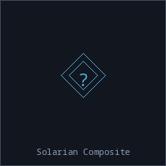

Solarian Composite

General
| Category | Refined |
| Rarity | exotic |
| Size | 2 |
| Stackable | Yes |
| Tradeable | Yes |
Market
| Base Value | 650 cr |
Advanced material developed in Sol system research labs.
Produced By
| Recipe | Qty | Crafting Time | Skills |
|---|---|---|---|
| Forge Solarian Composite | 1 | 10 ticks | Ore Refinement 5 |
Used In
Used to Build Ships
| Ship | Category | Qty |
|---|---|---|
| Archive | Industrial | 30 |
| Atmospheric Sampler | Industrial | 3 |
| Axiomata | Combat | 35 |
| Compendium | Commercial | 7 |
| Concordance | Combat Support | 7 |
| Crucible | Industrial | 45 |
| Cryo Laboratory | Industrial | 7 |
| Cryogenic Survey | Industrial | 3 |
| Deep Core Platform | Industrial | 8 |
| Deep Survey | Industrial | 4 |
| Dialectic | Combat | 8 |
| Dosimetry | Industrial | 9 |
| Encyclopedia | Support | 40 |
| Fractional Distillery | Industrial | 7 |
| Logistics Prime | Commercial | 7 |
| Observatorium | Exploration | 45 |
| Panacea | Support | 40 |
| Pantheon | Combat Support | 35 |
| Paradox Engine | Combat Support | 40 |
| Perigee | Exploration | 6 |
| Perihelion | Exploration | 7 |
| Promenade | Civilian | 5 |
| Quorum | Combat | 7 |
| Remedy | Support | 6 |
| Taxonomy | Industrial | 5 |